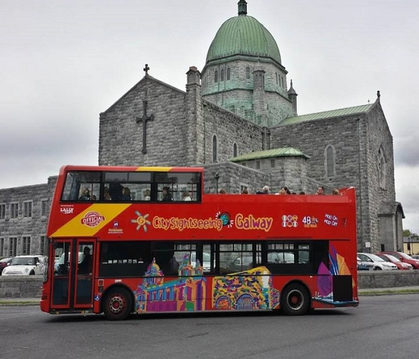
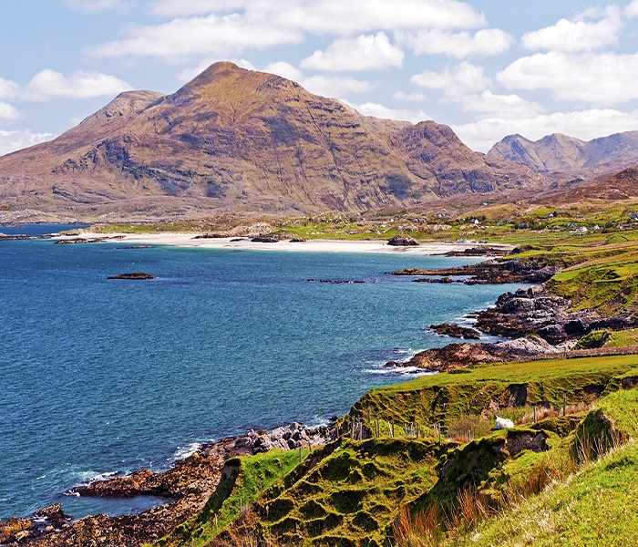
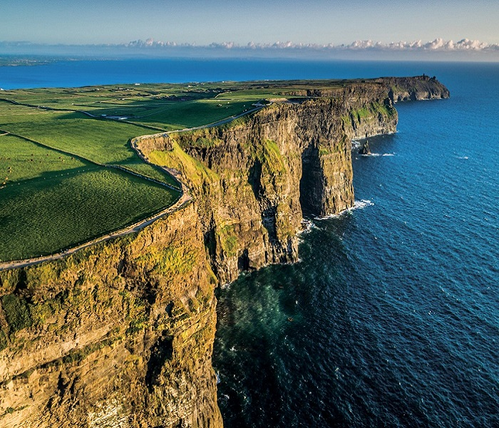
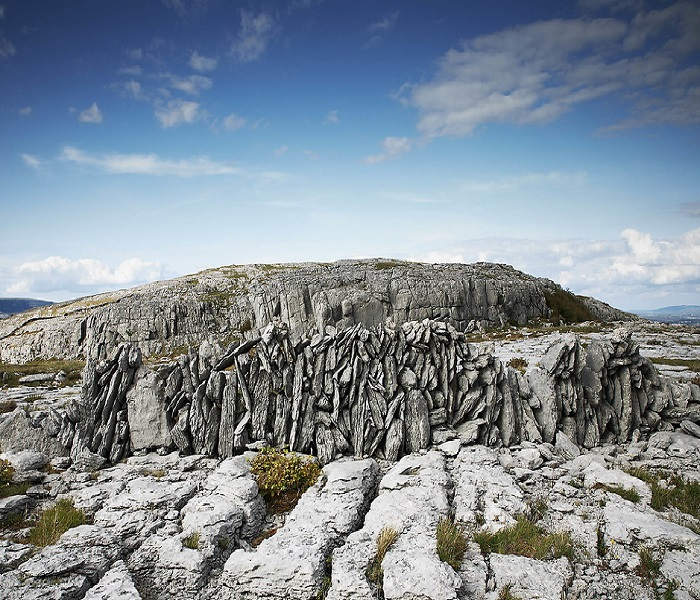
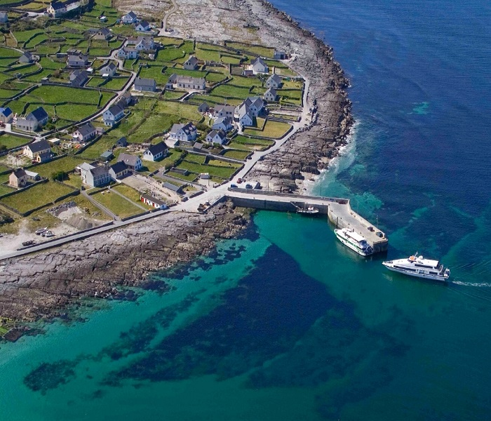
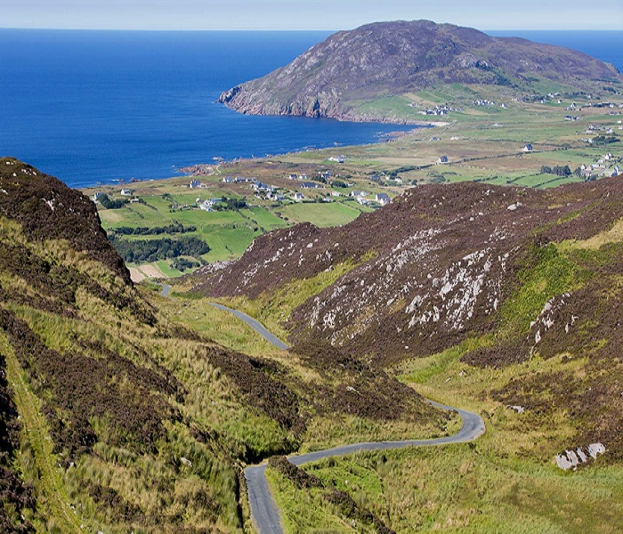

M
Moore B&B
The Long Walk | Galway
Galway is a thriving city with a lively atmosphere and beautiful scenery. As the Festival Capital of Ireland, boasting a large busking scene there is something for everyone to enjoy. Emerse yourself in the rich culture of a welcoming traditional pub, or have a fantastic meal in one of the many Michelin Star restaurants. Fulfil all your shopping needs by strolling through Shop Street or visiting the Eyre Square Shopping Centre. Enjoy the exquise nature surronding the city on the spectacular coastal walks, or on one of the two sandy beaches in the area. For adventure seekers Galway offers numerous activities such as a variety of water sports, horse-riding, fishing, golfing, and more! For those interested in the history of Galway, take a walking tour or bus tour of the city, visit the Galway Cathedral, NUI Galway, Eyre Square, The Spanish Arch & Long Walk, Quay Street and more.
With a prime location between Salthill and the City Center, anything you wish is within walking distance. Additonally, the nearest bus stop is only 50 yards away to take you anywhere within the City, Salthill or surrounding areas. Bikes are available at Moore the Merrier B&B for hire by the hour, day or week. Please ask reception for further details. Taxis are also available on request.
Located on the West Coast of Ireland, Galway is an excellent base to explore the beauty and charm of this picturesque country. Sightseeing tours can be arranged at Moore the Merrier B&B for a discount. You do not need to book any tours in advance! All tickets may be purchased on arrival. Please see below for more details of the wonders of the area.
See all of the main tourist attractions in Galway City with one simple bus tour. Learn about the enthralling history of the "City of Tribes", and how it became the present day Cultural Capital. Featuring a Hop-On Hop-Off ticket system, personalise your experience by exploring the places of your choosing! With stops at Eyre Square, The Salthill Promenade, Galway Cathedral, Spanish Arch, The Latin Quarter, Galway Harbour, and more, this tour promises to give you access to explore the key features of Galway City however you desire. Ask at reception for more information and to book a bus tour of Galway City at a discounted rate.
Immerse yourself in an area like no other. This distinct region is the epitome of all that Irealnd has to offer. Rich in Irish culture and traditions, this Gaeltact (Irish Speaking) area is unique in many ways. It offers a incredible landscapes including picturesque lakes, rivers, a breathtaking coastline, rugged hills and astonishing mountains and national parks. Connemara also boasts attractions such as Kylemore Abbey and Victorian Walled Garden, and the town of Clifden. Ask at reception for more information and to book a tour of Connemara at a discounted rate.
The incredible Cliffs of Moher are a must see for many visitors to Ireland. One of Ireland's impressive natural wonders, these sea cliffs feature a dramatic vertical cliff face, plunging to the Atlantic Ocean below. At a maximum height of 214 meters, guests can enjoy fantastic views all the way out to Galway Bay and the Aran Islands, the Twelve Bens mountain range, Loop Head and more. Enjoy strolling along the official Cliffs of Moher Coastal Walk, 18km in total length, or stop at the grass roofed Visitor Centre and enjoy a lovely cup of tea in the cafe. Located at the edge of the Burren region in County Clare, the Cliffs of Moher are a perfect day trip from Galway City. Tours leaving from Galway City also feature stops at the towns of Kinvara and Doolin, The Ailwee Cave and The Burren. Ask at reception for more information and to book a tour of The Cliffs of Moher at a discounted rate.
Located in County Clare, the Burren is characterised by its distinctive barren landscapes, with unique rock formations and diversity of flora and fauna. Home to the Corcomroe Abbey ruins, many archaeological sites of importance and the smallest of Ireland's 6 national parks, The Burren makes an excellent destination for those looking to explore its fascinating landscapes. The Burren can be visited as a stand alone trip for those looking to spend additional time hiking or exloring, or as part of a trip to other locations in the are such as the Cliffs of Moher. Ask at reception for more information and to book a tour of The Burren at a discounted rate.
Located at the mouth of Galway Bay, the Aran Islands have a unique tourist appeal. Located in the Gealtacht (Irish Speaking) area, the Aran Islands boast incredible landscapes, numerous ruins and sacred sites, and draw in experienced adventure seekers. Comprised of three unique islands. Inis Mór is the largest of the three islands. Here you can find the World Heritage site Dun Aonghasa, which is set on a dramatic 91 meter cliff edge. Inis Meáin is a more authentic escape, where visitors can step back in time to charming villages with stone walls and classic thatched-roof cottages. The smallest island is Inis Oírr, known for its distinctive charm. The Aran Islands can be visited as a stand-alone day trip, or as part of a trip to the Cliffs of Moher or Connemara. Ask at reception for more information and to book a tour of The Aran Islands at a discounted rate.
The Wild Atlantic Way is a 2600 km long route stretching across the entire West Coast of Ireland. Travelling through 9 counties, this long-distance driving experience is a journey through the hidden and remote places displaying Ireland's natural beauty. Hire a car and emabark on your own journey, or ask at reception for more information and to book a tour along the Wild Atlantic Way at a discounted rate.
